March 23rd - 27th
March 23rd - 27th


Sponsors
Diamond
 Osaka International Convention Center
Osaka International Convention Center
Platinum

 Mercari
Mercari
 National Science Foundation
National Science Foundation
 OSAKA CONVENTION & TOURISM BUREAU
OSAKA CONVENTION & TOURISM BUREAU
Gold
Tateishi Science and Technology Foundation
The Telecommunications Advancement Foundation
Silver

DAQRI
Bronze
 BARCO
BARCO
 Huawei Japan
Huawei Japan
 Knowledge Service Network
Knowledge Service Network
 Mozilla Corporation
Mozilla Corporation
 Osaka Electro-Communication University
Osaka Electro-Communication University
 SenseTime Japan
SenseTime Japan
Flower / Misc
 GREE, Inc.
GREE, Inc.
 KYOHRITSU ELECTRONIC INDUSTRY Co.,Ltd.
KYOHRITSU ELECTRONIC INDUSTRY Co.,Ltd.
 Beijing Nokov Science & Technology Co., Ltd.
Beijing Nokov Science & Technology Co., Ltd.
 PoSTMEDIA
PoSTMEDIA
 SoftCube Corporation
SoftCube Corporation
 Vicon
Vicon
Exhibitors
 Advanced Realtime Tracking (ART)
Advanced Realtime Tracking (ART)
 Archivetips
Archivetips
 China's State Key Laboratory of Virtual Reality Technology and Systems
China's State Key Laboratory of Virtual Reality Technology and Systems
 Computer Network Information Center, Chinese Academy of Sciences
Computer Network Information Center, Chinese Academy of Sciences
 Creact
Creact
 Crescent
Crescent
 Fujitsu
Fujitsu
 Fun Life Inc.
Fun Life Inc.
 Haption
Kyohritsu
Haption
Kyohritsu
 Nihon Binary Co., Ltd.
Nihon Binary Co., Ltd.
 NIST - Public Safety Communications Research
Nokov
NIST - Public Safety Communications Research
Nokov
 Optitrack Japan, Ltd.
Optitrack Japan, Ltd.
 PhaseSpace
PhaseSpace
 QD Laser, Inc.
QD Laser, Inc.
 Qualisys
Qualisys
 Solidray Co.,Ltd.
Solidray Co.,Ltd.
 WESTUNITIS Co., Ltd.
WESTUNITIS Co., Ltd.
Supporters
IEEE Kansai Section
Society for Information Display Japan Chapter

VR Consortium

The Institute of Systems, Control and Information Engineers
Human Interface Society

The Japanese Society for Artificial Intelligence
The Visualization Society of Japan

Information Processing Society of Japan
The Robotics Society of Japan
Japan Society for Graphic Science
The Japan Society of Mechanical Engineers
Japanese Society for Medical and Biological Engineering

The Institute of Image Information and Television Engineers
The Society of Instrument and Control Engineers
The Institute of Electronics, Information and Communication Engineers
The Institute of Electrical Engineers of Japan
The Society for Art and Science
Japan Ergonomics Society

The Japanese Society of Medical Imaging
Exhibitors and Supporters
Research Demos
Click here to download the PDF version.
Demo ID: D01
Augmented Dodgeball with Double Layered Balancing
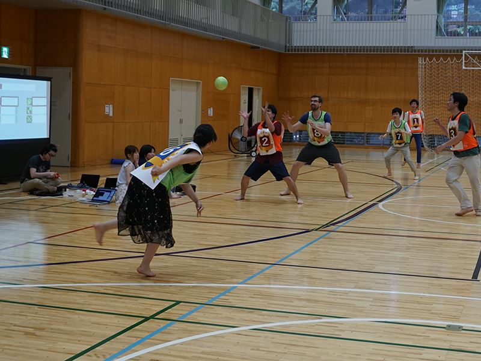 Kadri Rebane, David Hörnmark, Ryota Shijo, Tim Schewe, Takuya Nojima
The University of Electro-Communications
Abstract: Playing is most fun when the outcome remains unsure until the end. In team games, this means that both teams have comparable skill levels. When this is hard to accomplish, game balancing can be used. We introduce Augmented Dodgeball, a game with a double layer balancing system. First, players can choose a character they wish to play. Second, hidden from the player, that characters parameters can be changed according to the skill level of the player. This allows for a more seamless balancing between player’s physical skills without publically labeling the players based on their skill levels.
Demo ID: D02, Invited from Virtual Reality Society Japan Annual Conference (VRSJAC)
ExLeap: Minimal and highly available telepresence system creating leaping experience
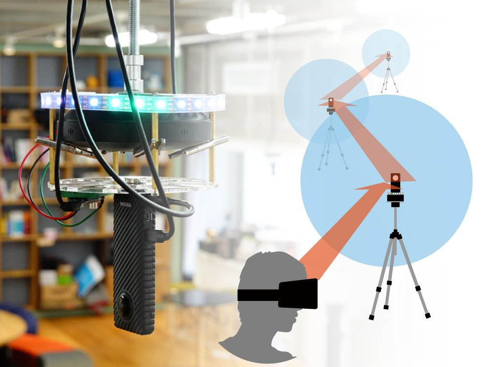 Atsushi Izumihara Daisuke Uriu Atsushi Hiyama Masahiko Inami
The University of Tokyo
Abstract: We propose “ExLeap”, a minimal telepresence system that creates leaping experience. Multiple “nodes” with an omnidirectional camera transmit the video to clients, and on the client, videos are rendered in 3D space. When moving to another node, by crossfading two videos, the user can feel as if she/he leaps between two places. Each node consists of very simple hardware, so we can put them on multiple places we want to go to. Moreover, because the system can be used 24/7 by multi-user simultaneously and is very easy to use, it creates various types of chances of communications.
Demo ID: D03
fARFEEL: Providing Haptic Sensation of Touched Objects using Visuo-Haptic Feedback
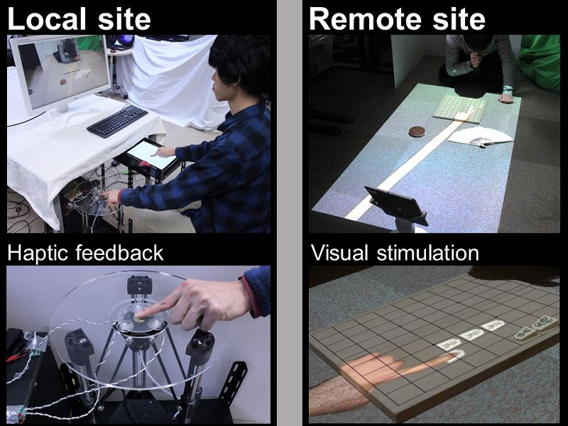 Naruki Tanabe, Yushi Sato, Kohei Morita, Michiya Inagaki, Yuichi Fujino, Parinya Punpongsanon, Haruka Matsukura, Daisuke Iwai, Kosuke Sato
Osaka University
Abstract: We present fARFEEL, a remote communication system that provides visuo-haptic feedback allows a local user to feel touching distant objects. The system allows the local and remote users to communicate by using the projected virtual hand (VH) for the agency of his/her own hands. The necessary haptic information is provided to the non-manipulating hand of the local user that does not bother the manipulation of the projected VH. We also introduce the possible visual stimulus that could potentially provide the sense of the body ownership over the projected VH.
Demo ID: D04
FraXer: Fragrance Mixer using Cluster Digital Vortex Air Cannon
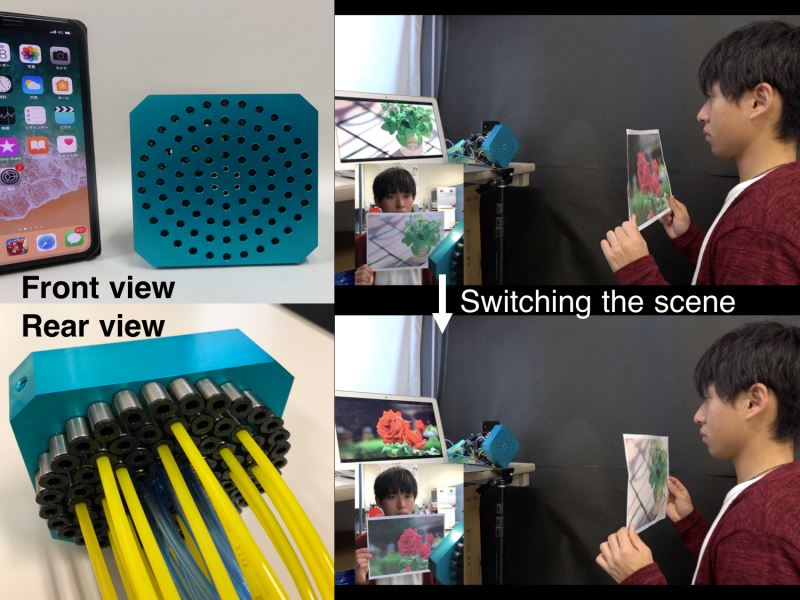 Yuma Sonoda, Koji Ohara, Sho Ooi, Kohei Matsumura, Yasuyuki Yanagida, Haruo Noma
Ritsumeikan University, Meijo University
Abstract: We propose “FraXer” that allows to easily blend and switch fragrance using a “Cluster Digital Vortex Air Cannon” (CDA). The CDA generates a variety of vortex rings without changing its mechanical structure. The FraXer easily conveys diffused fragrance substances with a vortex ring Using extra emission holes. In addition, we prepare some fragrance sources in different halls, and the FraXer is able to quickly switch the kind of fragrance and compose different fragrance in the air by emitting them simultaneously.
Demo ID: D05
Augmented Reality Floods and Smoke Smartphone App Disaster Scope utilizing Real-Time Occlusion
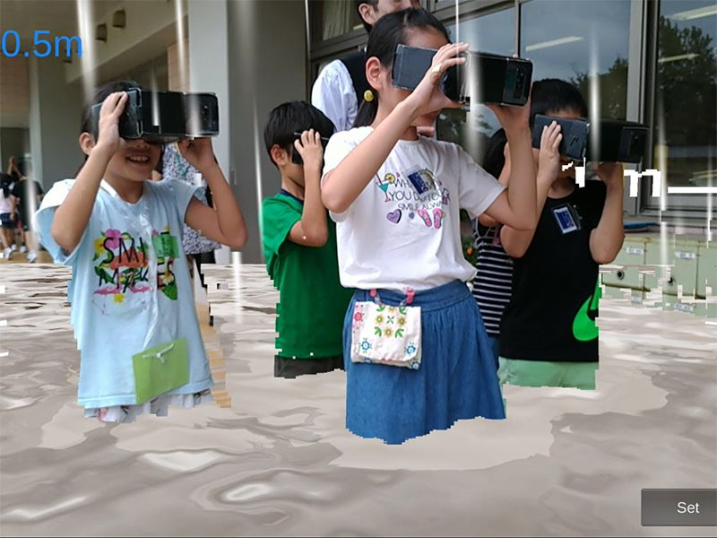 Tomoki Itamiya, Hideaki Tohara, Yohei Nasuda
Aichi University of Technology
Abstract: The augmented reality smartphone-application Disaster Scope provides a special immersive experience to improve crisis awareness of disaster in a peacetime. The application can superimpose an occurrence disaster situation such as CG floods and debris and fire smoke in an actual scenery, using only a smartphone and paper goggles. By using a smartphone equipped with a 3D depth sensor, it is possible to sense the height from the ground and recognize surrounding objects. The real-time occlusion processing was enabled using only by a smartphone. The collision detection of real world’s objects and CG debris is also possible.
Demo ID: D06
Transformable Game Controller and its Application to Action Game
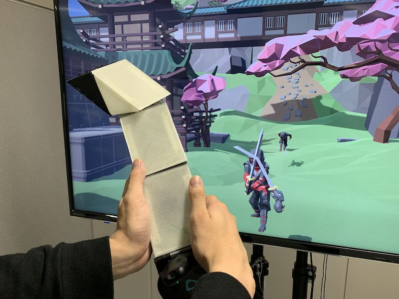 Akifumi Inoue, Takeru Fukunaga, Ryuta Ishikawa
Tokyo University of Technology
Abstract: We propose a transformable game controller. You can change its shape manually to make it a dedicated controller that has the same shape with the corresponding item in the game world. The game system can also change the shape of the controller automatically when the shape of the corresponding game item changes by the damage. The continuous shape synchronization between the real controller and the virtual game item can provide the player rich sense of unity with the game character.
Demo ID: D07, Invited fromThe ACM Symposium on Virtual Reality Software and Technology (VRST)
Real-Time Virtual Brain Aneurysm Clipping Surgery
 Hirofumi Seo, Naoyuki Shono, Taichi Kin, Takeo Igarashi
Hirofumi Seo, Naoyuki Shono, Taichi Kin, Takeo Igarashi
The University of Tokyo
Abstract: We propose a fast, interactive real-time 3DCG deformable simulation prototype for preoperative virtual practice of brain aneurysm clipping surgery, controlled by Position Based Dynamics (PBD). Blood vessels are reconstructed from their central lines, connected to the brain by automatically generated thin threads “virtual trabeculae”, and colored by automatically estimated their dominant region.
Demo ID: D08
Bidirectional Infection Experiences in a Virtual Environment
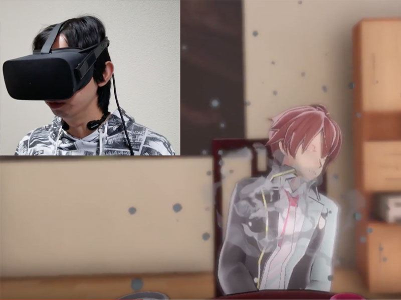 Yamato Tani, Satoshi Fujisawa, Takayoshi Hagiwara, Yasushi Ikei, Michiteru Kitazaki
Toyohashi University of Technology, Tokyo Metropolitan University
Abstract: Pathogenic infection is usually invisible. We have developed a virtual reality system to experience bidirectional infections using vision and tactile sensations. When the avatar coughs toward a user, a cloud of visualized pathogen-droplets jet out and strike the user with vision and touch. When the user coughs, a cloud of visualized pathogen jets out. The avatar tries to avoid it unpleasantly, but infected. This system enables us to experience pathogenic infection in both perspectives (infected and infecting). Thus, it may contribute to increasing user’s knowledge of infection and to facilitating prevention behaviors such as wearing a hygiene mask.
Demo ID: D09
Smooth Transition between Real and Virtual Environments via Omnidirectional Video for More Believable VR
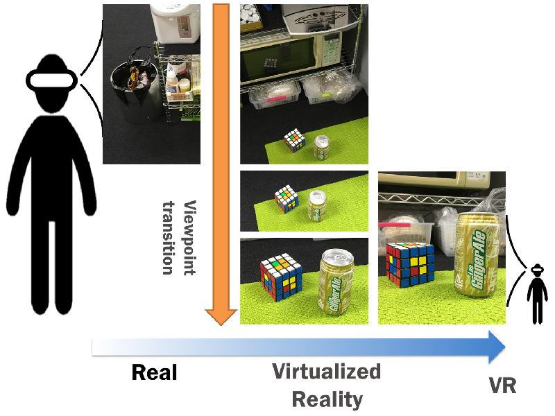 Shingo Okeda, Hikari Takehara, Norihiko Kawai, Nobuchika Sakata, Tomokazu Sato, Takuma Tanaka, Kiyoshi Kiyokawa
Nara Institute of Science and Technology, SenseTime, Shiga University
Abstract: In conventional virtual reality systems, users usually do not perceive and recognize the experience as reality. To make the virtual experience more believable, we propose a novel real-virtual transiton technique that preserves the sense of “conviction about reality” in a virtual environment. This is realized by spatio-temporal smooth transition from the real environment to the virtual environment with omnidirectional video captured in advance at the user’s position. Our technique requires less preparation cost and presents a more believable experience compared to existing transition techniques using a handmade 3D replica of the real environment.
Demo ID: D10
VR-MOOCs: A Learning Management System for VR Education
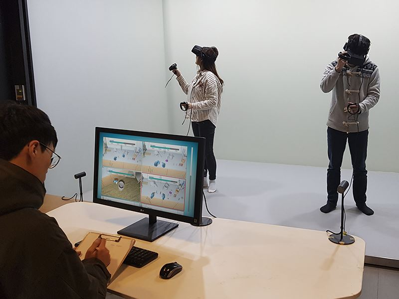 Hyundo Kim, Sukgyu Nah, Jaeyoung Oh, Hokyoung Ryu
Hanyang University, Korea
Abstract: This demonstration position paper introduces a first of its kind - VR MOOC LMS. The chemistry experiment VR content is running for the students, and a supervisor can monitor their learning performance and interaction behaviors. Our LMS system (local view, world view and multiview user interfaces) for the VR MOOC system is expected to shed light on how the interactive VR learning content can be affiliated to the proper instructional design in the near future.
Demo ID: D11, Invited from International collegiate Virtual Reality Contest (IVRC 2018)
Be Bait!: A Unique Fishing Experience with Hammock-based Underwater Locomotion Method
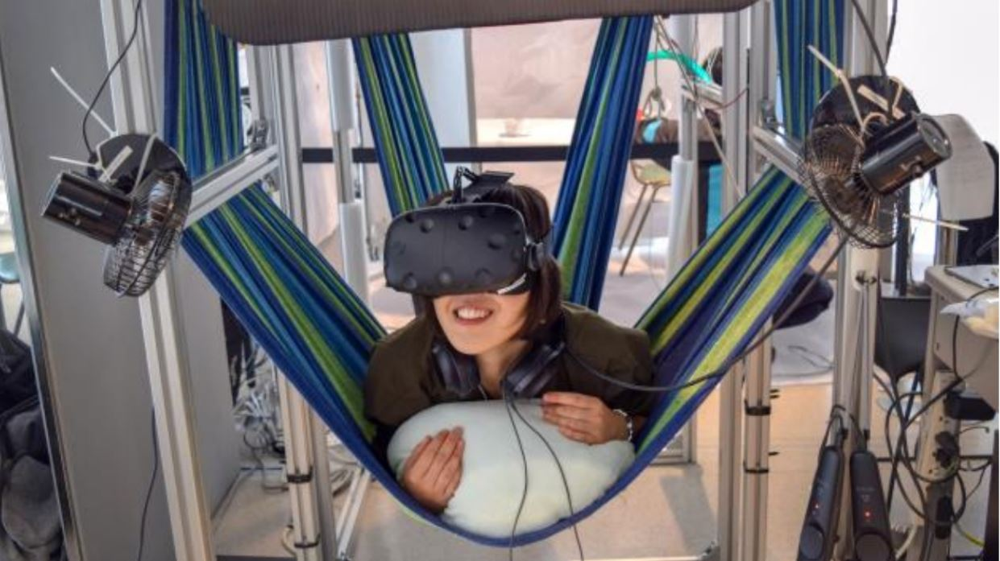 Shotaro Ichikawa, Yuki Onishi, Daigo Hayashi, Akiyuki Ebi, Isamu Endo, Aoi Suzuki, Anri Niwano, Yoshifumi Kitamura
Tohoku University
Abstract: We present “Be Bait!”, a unique virtual fishing experience that allows the user to become a bait by lying on the hammocks, instead of holding a fishing rod. We implemented the hammock-based locomotion method with haptic feedback mechanisms. In our demonstration, a user can enjoy exploring a virtual underwater world and fighting with fishes in a direct and intuitive way.
Demo ID: D12
Research Demo of Virtual Olfactory Environment Based on Computational Fluid Dynamics Simulation
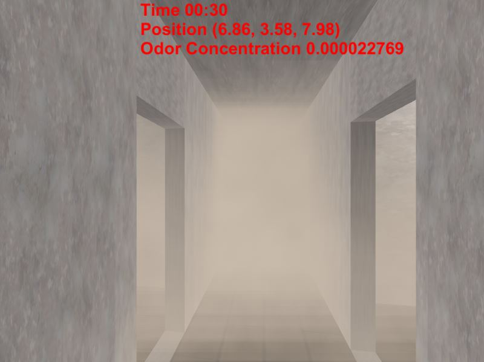 Yoshiki Hashimoto, Shingo, Kato, Takamichi Nakamoto
Tokyo Institute of Technology
Abstract: The olfactory presentation in virtual reality is carried out by specifying the type of perfume and the odor concentration in the olfactory display. There are various methods for obtaining the odor concentration. In this research, we used the computational fluid dynamics(CFD) simulation which can calculate the odor concentration distribution even if there are complicated objects in a virtual environment. Moreover, based on calculated concentration distribution, we created the software of searching for an odor source in a virtual environment by wearing the olfactory display in addition to head mount display(HMD).
Demo ID: D13
Shadow Inducers: Inconspicuous Highlights for Casting Virtual Shadows on OST-HMDs
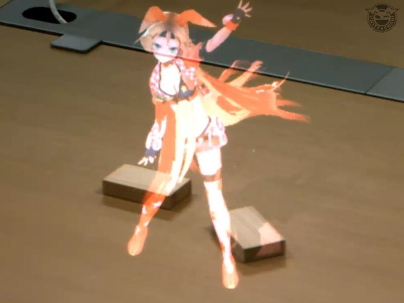 Shinnosuke Manabe, Sei Ikeda, Asako Kimura, Fumihisa Shibata
Ritsumeikan University
Abstract: Virtual shadows provide important cues of the positional relationship between virtual and real objects. However, it’s difficult to render shadows in the real scene on optical see-through head-mounted displays without occlusion capability. Our method casts virtual shadows not with physical light attenuation but with brightness induction caused by virtual objects, named shadow inducers, which surround the shadow to amplify the luminance of the real scene. Depending on the appearance of the shadow, the surrounding luminance is gradually amplified with Difference-of-Gaussian representing the characteristics of human vision. Users can observe shadows of deforming virtual objects on non-planar real surfaces.
Demo ID: D14
Can Transparent Virtual Objects Be Represented Realistically on OST-HMDs?
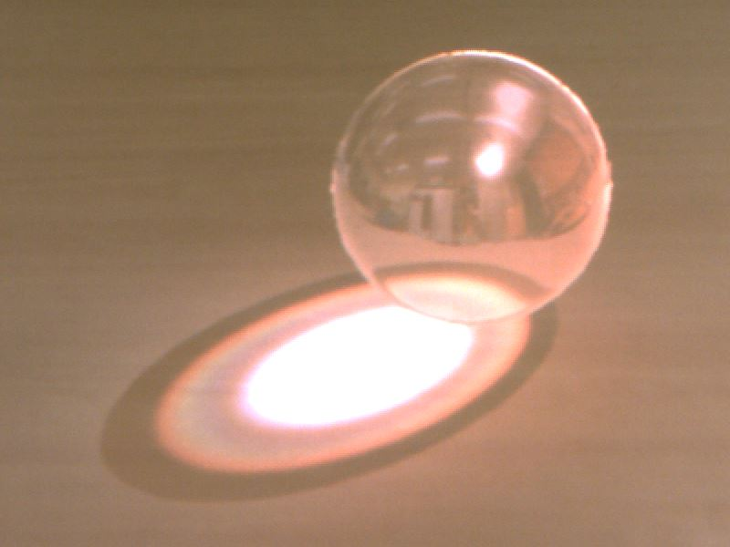 Yuto Kimura, Shinnosuke Manabe, Sei Ikeda, Asako Kimura, Fumihisa Shibata
Ritsumeikan University
Abstract: In mixed reality using video see-through displays, various optical effects can be simulated for representing a transparent object. However, consumer-available OST-HMDs cannot reproduce some of their effects correctly because of its mechanism. There has been little discussion concerning to what extent such transparent objects can be represented realistically. We represent optical phenomenon of transparent objects as far as possible using existing methods and our proposed method that gives a perceptual illusion of shadow of transparent objects. In this demonstration, participants can verify how realistically transparent objects can be represented in OST-HMDs and how each phenomenon contributes to the reality.
Demo ID: D15
Enchanting Your Noodles: A Gustatory Manipulation Interface by Using GAN-based Real-time Food-to-Food Translation
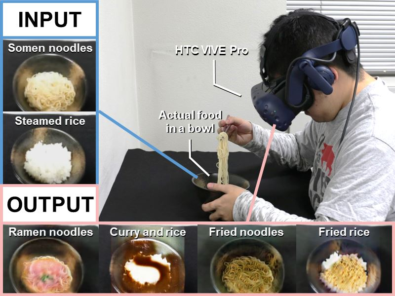 Kizashi Nakano, Daichi Horita, Nobuchika Sakata, Kiyoshi Kiyokawa, Keiji Yanai, Takuji Narumi
Nara Institute of Science and Technology; The University of Electro-Communications; The University of Tokyo
Abstract: In this demonstration, we present a novel gustatory manipulation interface which utilizes the cross-modal effect of vision on taste elicited with real-time food appearance modulation using a generative adversarial network. Unlike existing systems which only change texture pattern of food in an inflexible manner, our system changes the appearance into multiple types of food in real-time flexibly in accordance with the deformation of the food that the user is actually eating. Our demonstration can turn somen noodles into multiple types of noodles. Users will taste what is visually presented to some extent rather than what they are actually eating.
Demo ID: D16
VR Ski Coach: Indoor Ski Training System Visualizing Difference from Leading Skier
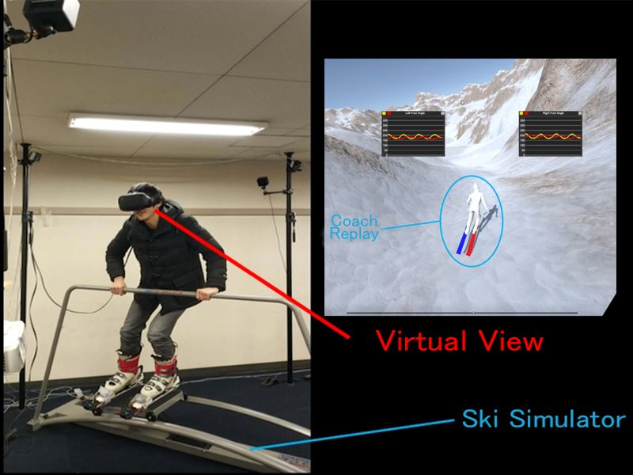 Takayuki Nozawa, Erwin Wu, Hideki Koike
Tokyo Institute of Technology
Abstract: Ski training is difficult because of environmental requirements and teaching methods. Therefore, we propose a virtual reality ski training system using an indoor ski simulator. Users can control the skis in the virtual slope and train their skills with a replay of a professional skier. The training system consists of three modules: a coach replay system for reviewing pro-skiers’s motion; a time control system that can be used to watch the detailed motion in preferred speed; and a visualization of the angle of the skis to compare the difference between the users and the coach.
Demo ID: D17
Coretet : A 21st Century Virtual Reality Musical Instrument for Solo and Networked Ensemble Performance
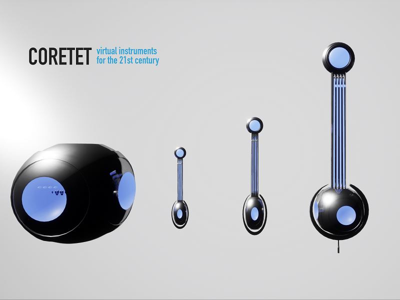 Rob Hamilton
Rensselaer Polytechnic Institute
Abstract: Coretet is a virtual reality instrument that explores the translation of performance gesture and mechanic from traditional bowed string instruments into an inherently non-physical implementation. Built using the Unreal Engine 4 and Pure Data, Coretet offers musicians a flexible and articulate musical instrument to play as well as a networked performance environment capable of supporting and presenting a traditional four-member string quartet. This paper discusses the technical implementation of Coretet and explores the musical and performative possibilities through the translation of physical instrument design into virtual reality.
Demo ID: D18
Intuitive Operate the Robot with Unconscious Response in Behavioral Intention: Tsumori Control
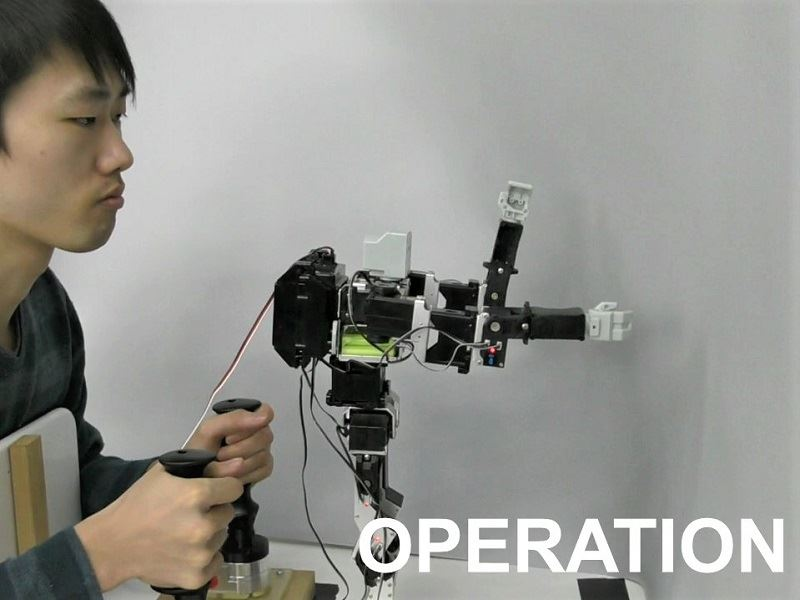 Hiroki Miyamoto, Tomoki Nishimura, Itsuki Onishi, Masahiro Furukawa, Taro Maeda
Osaka University; CiNet; JST PRESTO
Abstract: In this work, we proposed the control method that enable intuitive operation, “tsumori control”. Tsumori control is implemented using human discrete intention of motion included in continuous and intuitive motion output. The experience operating a robot using tsumori control will be demonstrated for our control system.
Demo ID: D19
AirwayVR: Virtual Reality Trainer for Endotracheal Intubation
 Pavithra Rajeswaran, Jeremy Varghese, Thenkurussi Kesavadas, Praveen Kumar, John Vozenilek
Pavithra Rajeswaran, Jeremy Varghese, Thenkurussi Kesavadas, Praveen Kumar, John Vozenilek
University of Illinois at Urbana Champaign ; OSF HealthCare System
Abstract: Endotracheal Intubation is a lifesaving procedure in which a tube is passed through the mouth into the trachea (windpipe) to maintain an open airway and facilitate artificial respiration. It is a complex psychomotor skill, which requires significant training and experience to prevent complications. The current methods of training, including manikins and cadaver, have limitations in terms of their availability for early medical professionals to learn and practice. These training options also have limitations in terms of presenting high risk/difficult intubation cases for experts to mentally plan their approach in high-risk scenarios prior to the procedure. In this demo, we present AirwayVR: virtual reality-based simulation trainer for intubation training. Our goal is to utilize virtual reality platform for intubation skills training for two different target audience (medical professionals) with two different objectives. The first one is to use AirwayVR as an introductory platform to learn and practice intubation in virtual reality for novice learners (Medical students and residents). The second objective is to utilize this technology as a Just-in-time training platform for experts to mentally prepare for a complex case prior to the procedure.
Demo ID: D20
Hearing with Eyes in Virtual Reality
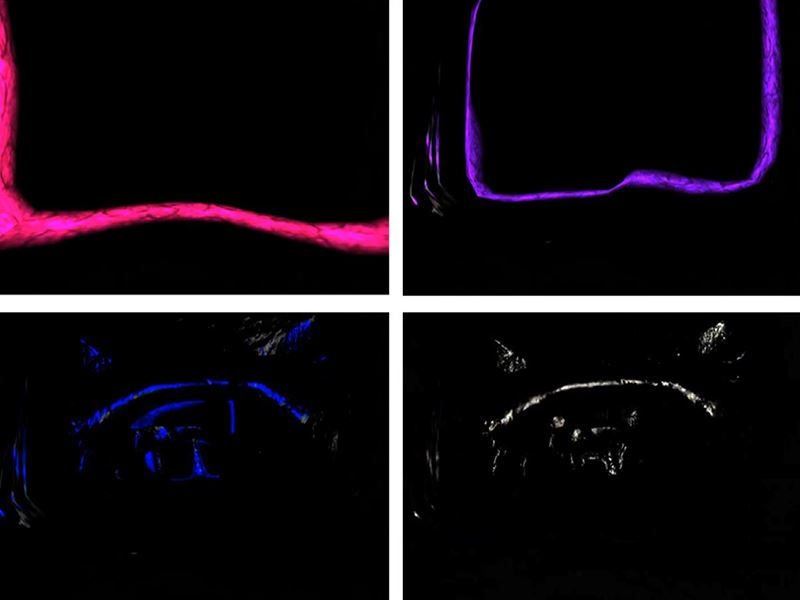 Amalie Rosenkvist, David Sebastian Eriksen, Jeppe Koehlert, Miicha Valimaa, Mikkel Brogaard Vittrup, Anastasia Andreasen, George Palamas
Aalborg University
Abstract: Sound and light signal propagation have similar physical properties. This provides inspiration for creating an audio-visual echolocation system, where light is mapped to the sound signal, visually representing auralization of the virtual environment (VE). Some mammals navigate using echolocation; however humans are less successful with this. To the authors’ knowledge, it remains to be seen if sound propagation and its visualization have been implemented in a perceptually pleasant way and is used for navigation purposes in the VE. Therefore, the core novelty of this research is navigation with visualized echolocation signal using a cognitive mental mapping activity in the VE.
Demo ID: D21
Wide Viewing Angle Fine Planar Image Display without the Mona Lisa Effect
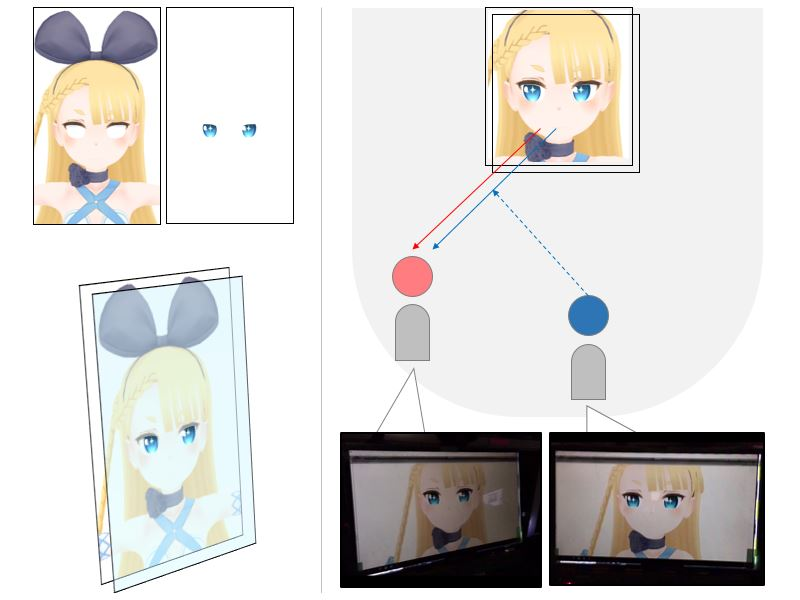 Hironori Mitake, Taro Ichii, Kazuya Tateishi, Shoichi Hasegawa
Tokyo Institute of Technology
Abstract: We propose simple face display without the Mona Lisa gaze effect. The display can convey appropriate gaze direction in accordance with viewer’s position, and also high resolution and affordable cost. Proposed display has 2 layer LCDs, surface layer shows pupil and back layer shows face without pupil. Relative position of pupil and white of the eye appears to change in accordance with viewer’s position, thus the display convey different gaze image for each person. The method intended to be applied on digital signage with interactive character. Viewer dependent eye contact will attract people and increase social presence of the character.
Demo ID: D22
Rapid 3D Avatar Creation System using a Single Depth Camera
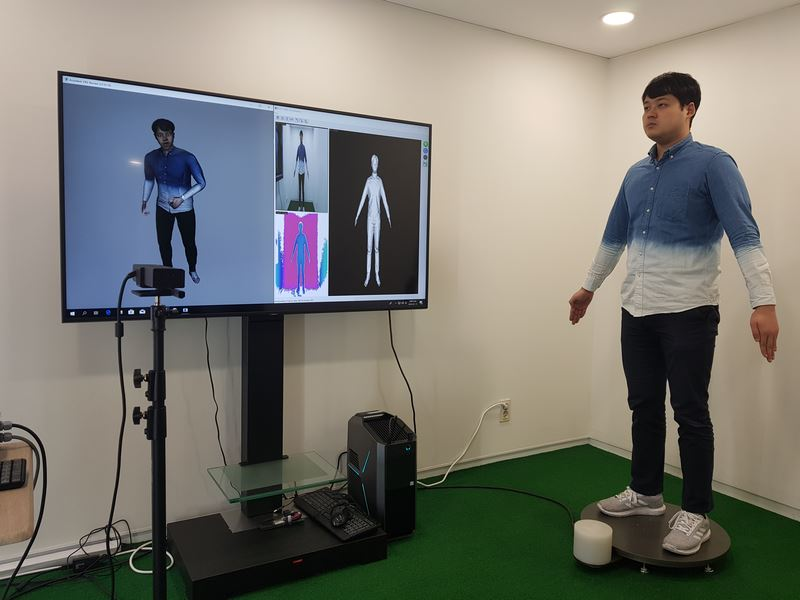 Hwasup Lim, Junseok Kang, Sang Chul Ahn
KIST, Korea
Abstract: We present a rapid and fully automatic 3D avatar creation system that can produce personalized 3D avatars within two minutes using a single depth camera and a motorized turntable. The created 3D avatar is able to make all the details of facial expressions and whole body motions including fingers. To our best knowledge, it is the first completely automatic system that can generate realistic 3D avatars in the common 3D file format, which is ready for the direct use in virtual reality applications or various services.
Demo ID: D23
Walking Experience Under Equivalent Gravity Condition on Scale Conversion Telexistence
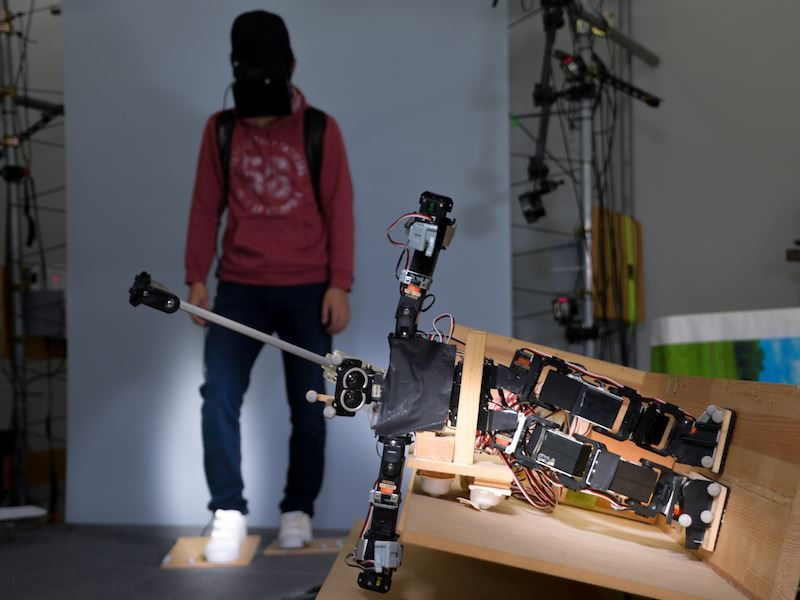 Masahiro Furukawa, Kohei Matsumoto, Masataka Kurokawa, Hiroki Miyamoto, Taro Maeda
Osaka University ; JST PRESTO ; CiNet
Abstract: Scale conversion telexistence comprises avatars of different scales compared with the human scale. Immersive telexistence experience requires the avatar to realize the operator’s behavior instantaneously. It is important to match the avatar’s behavior with the operator’s behavior because the difference between the operator and the avatar tends to hurt the immersiveness. However, the scale difference between an operator with the avatar makes behavior mismatch and lets the operator experience under different physical constant world. For instance, gravity changes under scale conversion telexistence. Thus, we show an equivalent gravity condition for walking using a small biped robot and a tilted floor.
Demo ID: D24
Text Entry in Virtual Reality using a Touch-sensitive Physical Keyboard
 Tim Menzner, Alexander Otte, Travis Gesslein, Philipp Gagel, Daniel Schneider, Jens Grubert
Tim Menzner, Alexander Otte, Travis Gesslein, Philipp Gagel, Daniel Schneider, Jens Grubert
Coburg University of Applied Sciences and Arts
Abstract: Text entry is a challenge for VR applications. In the context of immersive VR HMDs, text entry has been investigated for standard physical keyboards as well as for various hand representations. Specifically, prior work has indicated that minimalistic fingertip visualizations are an efficient hand representation. However, they typically require external tracking systems. Touch-sensitive physical keyboards allow for on-surface interaction, with sensing integrated into the keyboard itself. However, they have not been thoroughly investigated within VR. Our work brings together the domains of VR text entry and touch-sensitive physical keyboards. Specifically, we demonstrate a text entry technique using a capacitive touch-enabled keyboard.
Demo ID: D25
VR system to simulate tightrope walking with a standalone VR headset
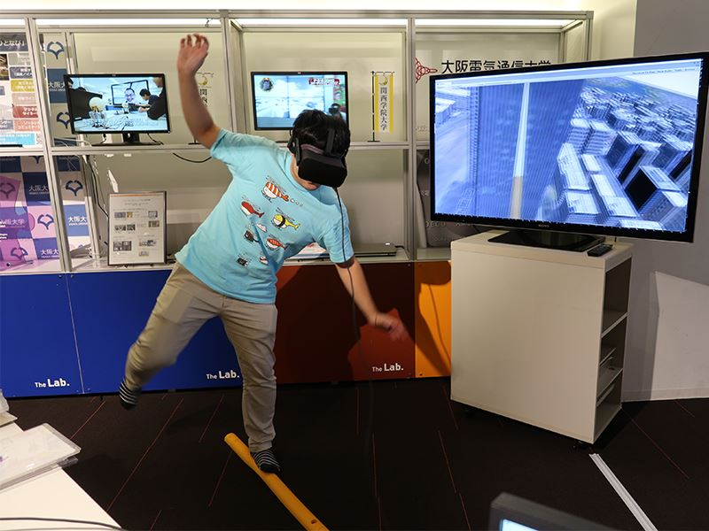 Saizo Aoyagi, Atsuko Tanaka, Satoshi Fukumori, Michiya Yamamoto
Toyo University, Kwansei Gakuin University
Abstract: Slack Rails, which are made of foam rubber, can offer a simulated experience of using slack lines. In this study, we developed a prototype system and its content to enable tightrope walking between skyscrapers with a VR headset. An evaluation experiment was conducted, and results show that it can make VR tightrope walking more realistic, difficult, and suitable for training.
Demo ID: D26
Distributed, Collaborative Virtual Reality Application for Product Development with Simple Avatar Calibration Method
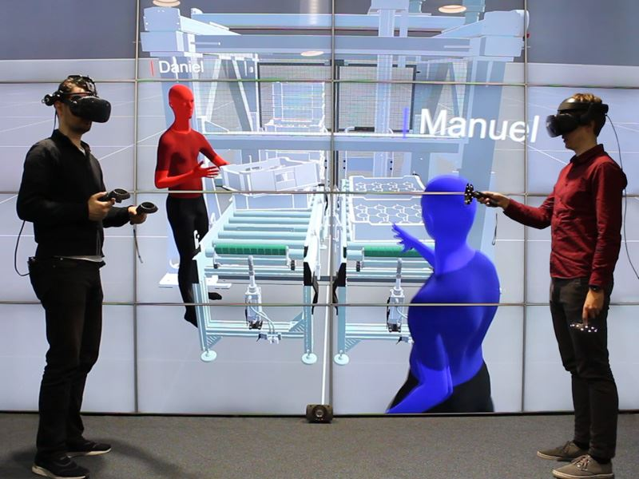 Manuel Dixken, Daniel Diers, Benjamin Wingert, Adamantini Hatzipanayioti, Betty J Mohler, Oliver Riedel, Matthias Bues
Fraunhofer Institute for Industrial Engineering IAO ; University of Stuttgart ; Max Planck Institute for Biological Cybernetics ; Max Planck Institute for Intelligent Systems ; Amazon Research Tuebingen
Abstract: In this work we present a collaborative virtual reality application for distributed engineering tasks, including a simple avatar calibration method. Use cases for the application include CAD review, ergonomics analyses or virtual training. Full-body avatars are used to improve collaboration in terms of co-presence and embodiment. Through a calibration process, scaled avatars based on body measurements can be generated by users from within the VR application. We demonstrate a simple, yet effective method for measuring the human body which requires off-the-shelf VR devices only. Tracking only the user’s head and hands, we use inverse kinematics for avatar motion reconstruction.
Demo ID: D27
Automatic Generation of Dynamically Relightable Virtual Objects with Consumer-Grade Depth Cameras
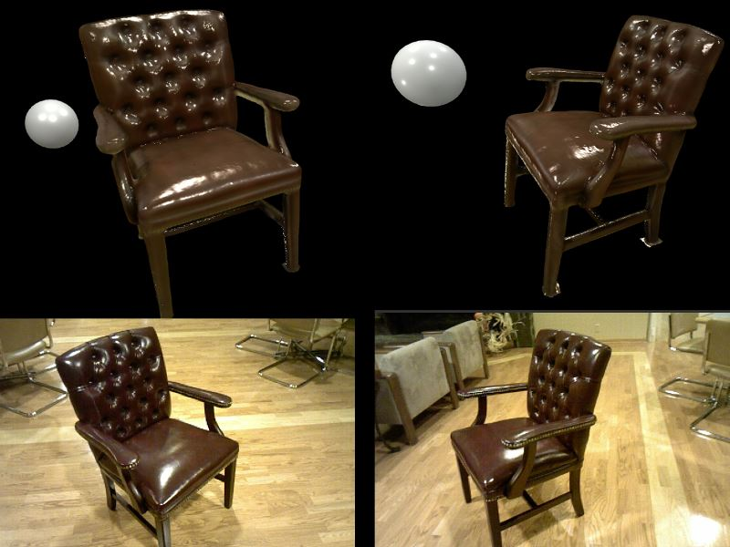 Chih-Fan Chen, Evan Suma Rosenberg
University of Southern California; University of Minnesota
Abstract: This research demo showcases the results of novel approach for estimating the illumination and reflectance properties of virtual objects captured using consumer-grade RGB-D cameras. Our fully automatic content creation pipeline reconstructs the physical geometry and separates the color images into diffuse (view-independent) and specular (view-dependent) components using low-rank decomposition. The lighting conditions during capture and reflectance properties of the virtual object are subsequently estimated from the specular maps and then combined with the diffuse texture. The live demo experience shows the results of several photorealistic scanned objects in a real-time virtual reality scene with dynamic lighting.
Demo ID: D28
An Augmented Reality Motion Planning Interface for Robotics
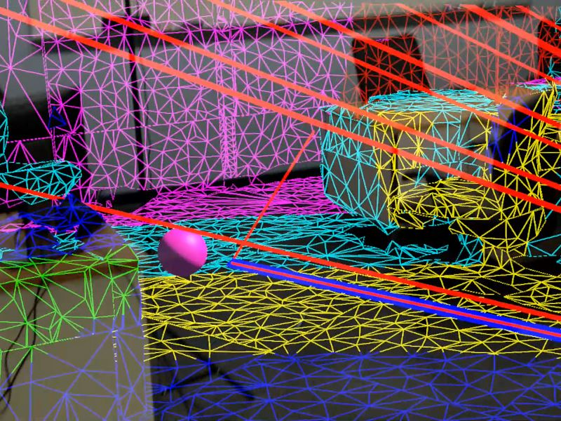 Courtney Hutton, Nicholas Sohre, Bobby Davis, Stephen Guy, Evan Suma Rosenberg
University of Minnesota
Abstract: With recent advances in hardware technology, autonomous robots are increasingly present in research activities outside of robotics, performing a multitude of tasks such as image capture and sample collection. However, user interfaces for task-oriented robots have not kept pace with hardware breakthroughs.Current planning and control interfaces for robots are not intuitive and often place a large cognitive burden on those who are not highly trained in their use. Augmented reality (AR) has also seen major advances in recent years. This demonstration illustrates an initial system design for an AR user interface for path planning with robotics.
Demo ID: D29
VR-based Batter Training System with Motion Sensing and Performance Visualization
 Kosuke Takahashi, Dan Mikami, Mariko Isogawa, Yoshinori Kusachi, Naoki Saijo
Kosuke Takahashi, Dan Mikami, Mariko Isogawa, Yoshinori Kusachi, Naoki Saijo
NTT Media Intelligence Laboratories ; NTT Communication Science Laboratories
Abstract: Our research aims to establish a novel VR system for evaluating the performance of baseball batters. Our VR system has three features; (a) it synthesizes highly realistic VR video from the data captured in actual games, (b) it estimates the reaction of the user to the VR stimulus by capturing the 3D positions of full body parts, and (c) it consists of off-the-shelf devices and is easy to use. Our demonstration provides users with a chance to experience our VR system and give them some quick feedback by visualizing the estimated 3D positions of their body parts.
Demo ID: D30
A New Interactive Haptic Device for Getting Physical Contact Feeling of Virtual Objects
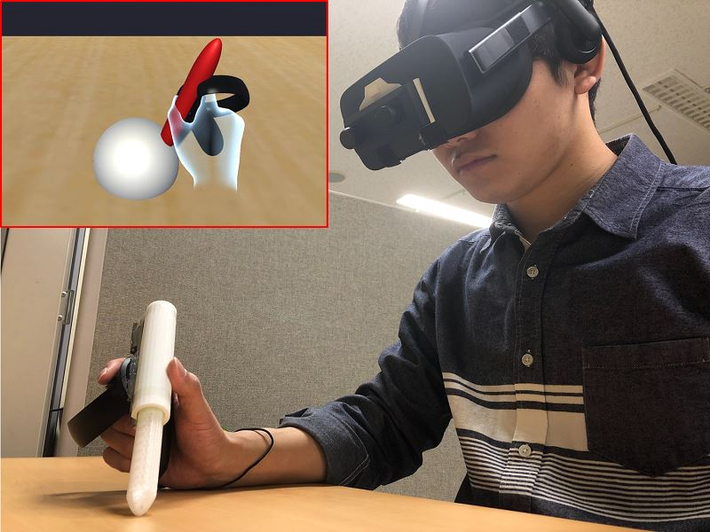 Keishirou Kataoka, Takuya Yamamoto, Mai Otsuki, Fumihisa Shibata, Asako Kimura
Ritsumeikan University ; University of Tsukuba
Abstract: We can create virtual 3D objects and paint on them in a virtual reality (VR) spaces. Many of the VR controllers used for such operations provide haptic feedbacks by vibration. However, it is impossible to provide the force feedbacks such as touching and stroking the real object’s surface only with the vibration. There is a sensory gap between the VR space and the real world. In this study, we proposed a device that could provide the force feedback to the user’s arm via the tip extension and contraction mechanism.
Demo ID: D31, Invited from Virtual Reality Society Japan Annual Conference (VRSJAC)
Full Parallax Table Top 3D Display Using Visually Equivalent Light Field
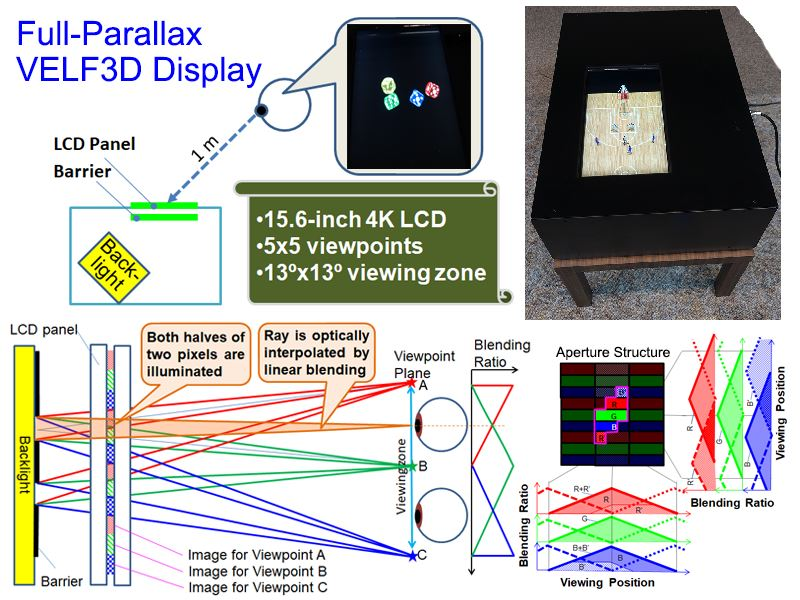 Munekazu Date, Megumi Isogai, Hideaki Kimata
NTT Media Intelligence Laboratories, Nippon Telegraph and Telephone Corporation
Abstract: A new full parallax light field 3D display that optically interpolates the rays emitted is proposed. Using a barrier with special aperture structure, we achieve interpolation by optical linear blending. It produces visually equivalent intermediate view point images equivalent to the real views if disparities are small enough. Therefore, a high feel of existence can be produced as the interpolation yields smooth motion parallax. Since interpolation reduces the number of viewpoints, number of pixels in each direction can be increased yielding high resolution. In this demonstration, we reproduce CG objects and scenes of a ball game on a table top.
Demo ID: D32
Perceptual Appearance Control by Projection-Induced Illusion
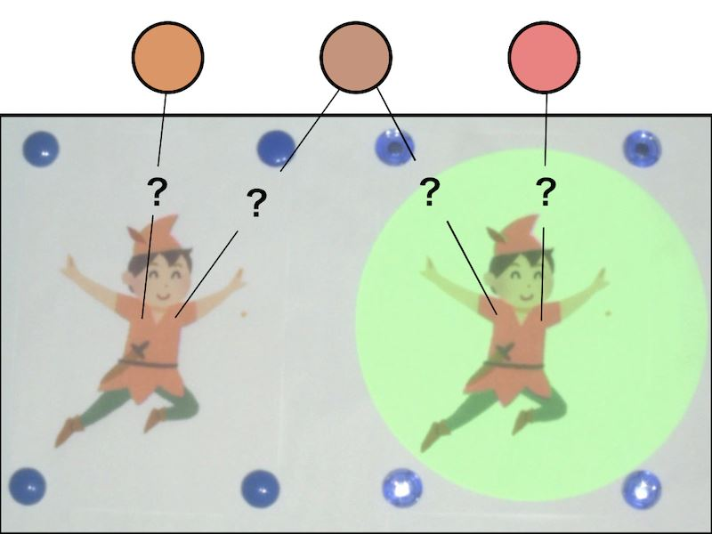 Ryo Akiyama, Goshiro Yamamoto, Toshiyuki Amano, Takafumi Taketomi, Alexander Plopski, Christian Sandor, Hirokazu Kato
Kyoto University; Wakayama University; Nara Institute of Science and Technology
Abstract: We can control the appearance of real-world objects by projection mapping. A projector, however, supports limited color range since it can only add illumination. In practice, actual color and perceived color are often different. We intentionally generate this difference by inducing color constancy illusion for extending the presentable color range of a projector. We demonstrate controlling object colors with and without inducing the illusion. Individuals perceive differences between presented colors although the actual colors are the same.
Demo ID: D33
Demonstration of Perceptually Based Adaptive Motion Retargeting to Animate Real Objects by Light Projection
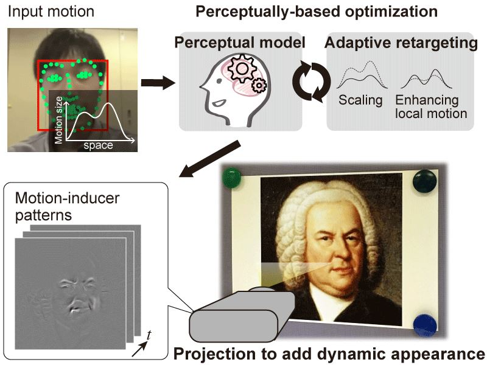 Taiki Fukiage, Takahiro Kawabe, Shin’ya Nishida
NTT Communication Science Laboratories
Abstract: Deformation Lamps is an illusion-based light projection technique that adds dynamic impressions to real objects without changing their surface colors and textures. However, with this technique, determining the best deformation sizes is difficult because the maximally- available effect sizes are limited by perceptual factors. Therefore, to obtain satisfactory results, effect creators have to spend much time and effort to manually adjust the deformation sizes. To overcome this limitation, we propose an optimization framework that automatically retargets the deformation effect based on a perceptual model. Our perceptually-based optimization framework allows a user to enjoy intuitive and interactive appearance control of real-world objects.
Demo ID: D34
Visualizing Ecological Data in Virtual Reality
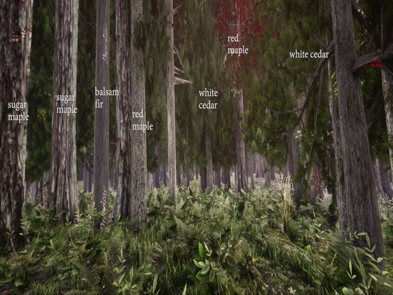 Jiawei Huang, Melissa S. Lucash, Robert M. Scheller, Alexander Klippel
ChoroPhronesis ; Pennsylvania State University ; Portland State University ; North Carolina State University
Abstract: Visualizing complex data and models outputs are a challenge. For a lay person, model results can be cognitively challenging and the model accuracy hard to evaluate. We introduce a virtual reality (VR) application that visualizes complex data and ecological model outputs. We combined ecological modeling, analytical modeling, procedural modeling, and VR, to allow 3D interactions with a forest under different climate scenarios and to retrieve information from a tree database. Our VR application was designed to educate general audiences, and as a tool for model verification by researchers.
Demo ID: D35
Shadowless Projector: Suppressing Shadows in Projection Mapping with Micro Mirror Array Plate
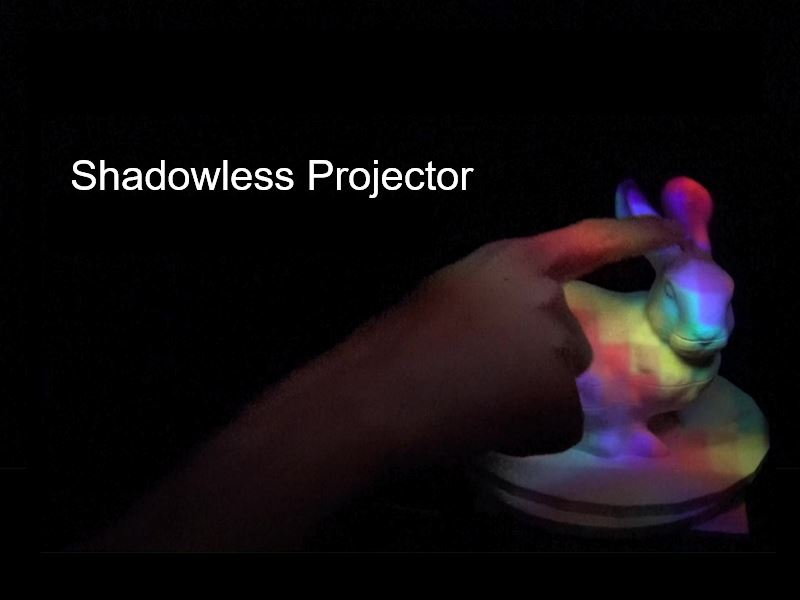 Kosuke Hiratani, Daisuke Iwai, Parinya Punpongsanon, Kosuke Sato
Osaka University
Abstract: Shadowless Projector is projection mapping system in which a shadow (more specifically, umbra) does not suffer the projected result. In this paper, we propose a shadow-less projection method with single projector. Inspired by a surgical light system that does not cast shadows on patients’ bodies in clinical practice, we apply a special optical system that consists of methodically positioned vertical mirrors. This optical system works as a large aperture lens, it is impossible to block all projected ray by a small object such as a hand. Consequently, only penumbra is caused, which leads to a shadow-less projection.